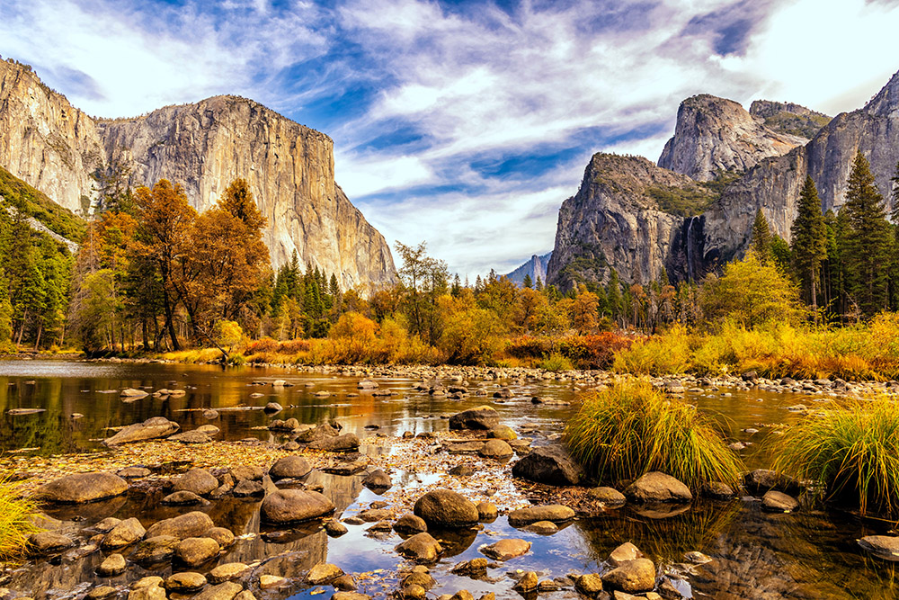
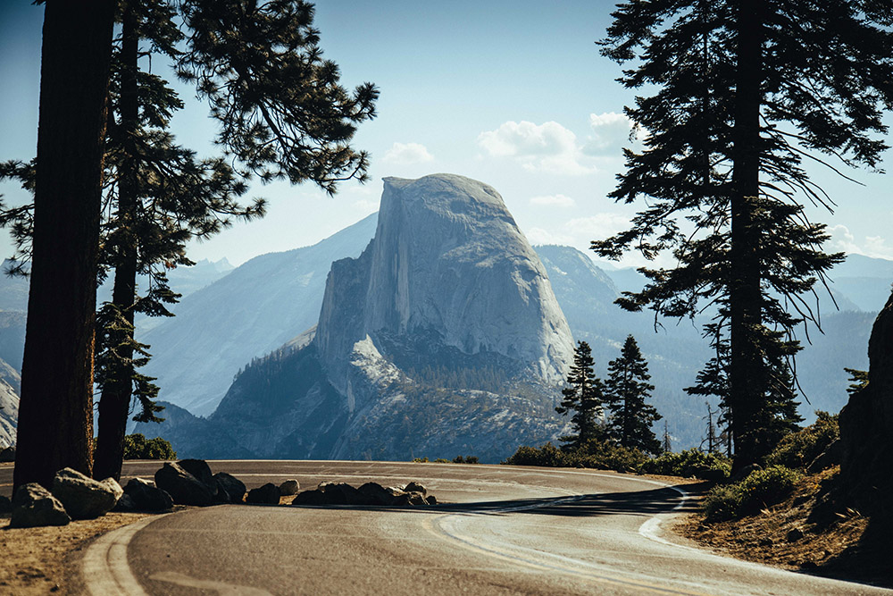
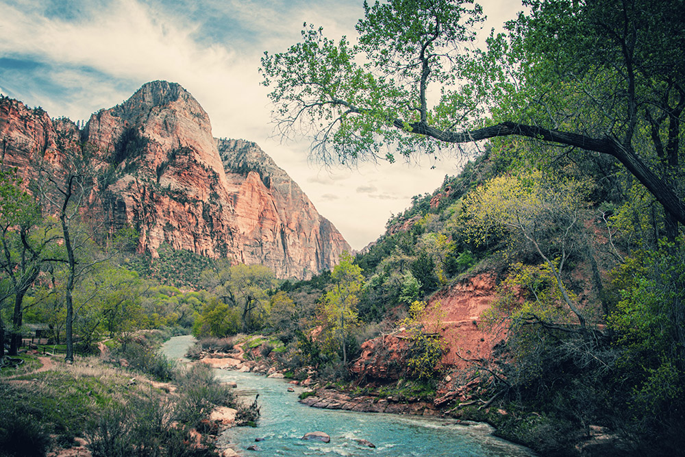
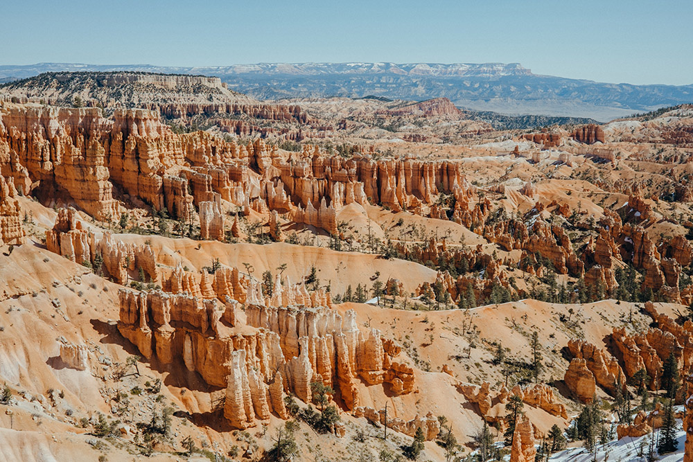

An American national park in California, surrounded on the southeast by Sierra National Forest and on the northwest by Stanislaus National Forest. The park is managed by the National Park Service and covers an area of 759,620 acres and sits in four counties – centered in Tuolumne and Mariposa, extending north and east to Mono and south to Madera County. Designated a World Heritage Site in 1984, Yosemite is internationally recognized for its granite cliffs, waterfalls, clear streams, giant sequoia groves, lakes, mountains, meadows, glaciers, and biological diversity.

A viewpoint above Yosemite Valley in the U.S. state of California. It is located on the south wall of Yosemite Valley at an elevation of 7,214 feet, 3,200 feet above Curry Village. The point offers a superb view of several of Yosemite National Park's well-known landmarks, including Yosemite Valley, Yosemite Falls, Half Dome, Vernal Fall, Nevada Fall, and Clouds Rest.

An American national park located in southwestern Utah near the town of Springdale. A prominent feature of the 229-square-mile park is Zion Canyon, which is 15 miles long and up to 2,640 ft deep. The canyon walls are reddish and tan-colored Navajo Sandstone eroded by the North Fork of the Virgin River. The lowest point in the park is 3,666 ft at Coalpits Wash and the highest peak is 8,726 ft at Horse Ranch Mountain.

An American national park located in southwestern Utah. The major feature of the park is Bryce Canyon, which despite its name, is not a canyon, but a collection of giant natural amphitheaters along the eastern side of the Paunsaugunt Plateau. Bryce is distinctive due to geological structures called hoodoos, formed by frost weathering and stream erosion of the river and lake bed sedimentary rocks. The red, orange, and white colors of the rocks provide spectacular views for park visitors.
